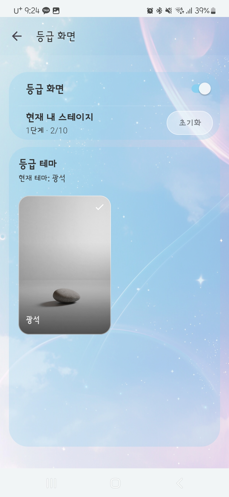
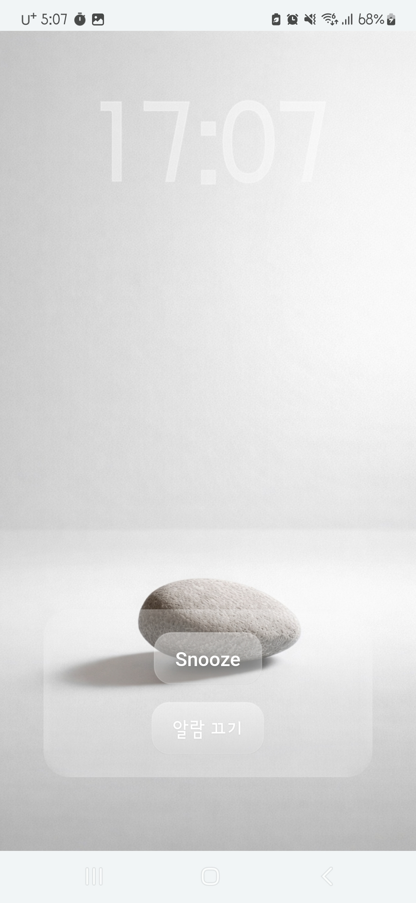
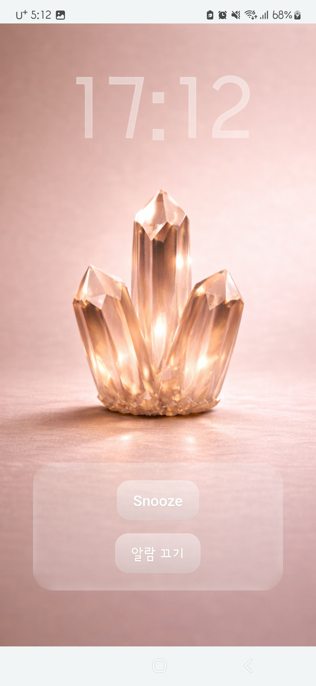

Using the Grade Screen
The Grade Screen lets you track your wake-up success record and see visual changes as you progress through stages.
This feature is applied to the screen that appears when a general alarm rings. If you tap the dismiss button within 7 seconds when the first alarm of the day rings, your count will increase. When the count reaches 10, you will move up to the next stage.
Grade Screen Settings
On the settings screen, you can check your current stage, accumulated count, and selected theme. You can also reset your progress if needed.

Check your current grade screen settings and progress.
Alarm Screen Changes
When the grade feature is enabled, the object in the alarm screen background changes based on your current stage. As your record grows, a higher-stage image is shown within the same theme.
When You Start

After Building Progress

This example uses the ore theme. As your stage increases, the object changes along with it.
Please Note
The grade count only applies to the first alarm of the day. If you want to build your progress, try to respond as quickly as possible when your first alarm rings.
You can reset your progress from the settings screen, and you can enable or disable the feature whenever needed.